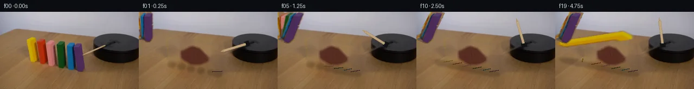

![首帧]()

Round 00
2026-11-05T16:29:11.374781+00:00像素候选变化代码 +308/−0inspection 更新
pixels 172fdab035d5a1fb · code d204d6fa22a0729e
查看本轮 generate.py 真实 diff
--- previous/generate.py
+++ current/generate.py
@@ -0,0 +1,308 @@
+"""PixelWorld vision-input generation, case_0036.
+
+Rotating wooden stick on a black turntable pushes the purple block into a tight
+row of six colored blocks; domino cascade runs right -> left, yellow falls last.
+
+Method (local pixel ops only):
+ * per-block RGBA sprites are segmented from frame 0 by colour distance;
+ * a clean background plate is built with cv2.inpaint over blocks, contact
+ shadows and the stick;
+ * each frame re-draws soft shadows, warps sprites with a 2.5D tip affine map
+ (leading bottom edge fixed, face width collapses to slab thickness ~90 deg),
+ adds a dark lower edge, and rotates an anti-aliased wood stick about the
+ measured hub (198,60).
+Frame 00 is saved byte-identical to first_frame.png.
+"""
+from pathlib import Path
+import numpy as np
+import cv2
+from PIL import Image, ImageDraw
+from scipy import ndimage
+import artifact_io
+
+HERE = Path(__file__).parent
+SS = 3 # supersampling factor for anti-aliased vector drawing
+
+# ---------------------------------------------------------------- geometry ----
+# name: roi(x0,x1,y0,y1), front colour, cap colour, pivot(x,y), width, height
+BLOCKS = [
+ dict(name='yellow', roi=(44, 70, 44, 96), front=(200, 165, 1), cap=(214, 188, 45),
+ pivot=(50, 93), w=18, h=45),
+ dict(name='red', roi=(64, 89, 47, 100), front=(171, 47, 9), cap=(198, 96, 66),
+ pivot=(67, 97), w=19, h=47),
+ dict(name='pink', roi=(83, 106, 49, 103), front=(199, 114, 107), cap=(224, 152, 156),
+ pivot=(85, 101), w=18, h=48),
+ dict(name='green', roi=(102, 124, 53, 107), front=(17, 67, 19), cap=(52, 104, 56),
+ pivot=(104, 105), w=17, h=49),
+ dict(name='blue', roi=(120, 141, 55, 109), front=(12, 94, 141), cap=(55, 132, 186),
+ pivot=(123, 108), w=15, h=49),
+ dict(name='purple', roi=(132, 160, 57, 113), front=(74, 43, 87), cap=(108, 72, 138),
+ pivot=(135, 111), w=19, h=50),
+]
+SLAB_T = 6.0 # apparent thickness (px) of a block lying at 90 deg
+HUB = np.array([198.0, 60.0])
+STICK_LEN = 50.0 # hub to tip
+STICK_TIP = 7.0 # pointed tip length
+STICK_W = 4.4 # shaft width
+
+# tilt table (deg), order matches BLOCKS (yellow..purple); frame 0 all upright
+ANG = {
+ # yellow red pink green blue purple ; arm bearing deg
+ 0: ([0, 0, 0, 0, 0, 0], 156),
+ 1: ([0, 0, 0, 0, 0, 7], 163),
+ 2: ([0, 0, 0, 0, 2, 16], 172),
+ 3: ([0, 0, 0, 1, 9, 22], 185),
+ 4: ([0, 0, 0, 8, 18, 26], 198),
+ 5: ([0, 0, 6, 16, 24, 28], 212),
+ 6: ([0, 5, 14, 23, 27, 28], 226),
+ 7: ([3, 13, 22, 27, 28, 28], 238),
+ 8: ([10, 20, 26, 28, 28, 28], 248),
+ 9: ([18, 26, 28, 28, 28, 28], 252),
+ 10: ([26, 28, 28, 28, 28, 28], 254),
+ 11: ([35, 28, 28, 28, 28, 28], 255),
+ 12: ([45, 28, 28, 28, 28, 28], 256),
+ 13: ([55, 28, 28, 28, 28, 28], 257),
+ 14: ([64, 28, 28, 28, 28, 28], 258),
+ 15: ([72, 28, 28, 28, 28, 28], 259),
+ 16: ([78, 28, 28, 28, 28, 28], 260),
+ 17: ([82, 28, 28, 28, 28, 28], 261),
+ 18: ([84, 28, 28, 28, 28, 28], 262),
+ 19: ([85, 28, 28, 28, 28, 28], 263),
+}
+
+
+# ------------------------------------------------------------- segmentation --
+def segment_sprites(rgb):
+ """Return list of dicts with upright RGBA sprite + local pivot."""
+ out = []
+ H, W = rgb.shape[:2]
+ for b in BLOCKS:
+ x0, x1, y0, y1 = b['roi']
+ sub = rgb[y0:y1, x0:x1].astype(np.float32)
+ d1 = np.linalg.norm(sub - np.array(b['front'], np.float32), axis=2)
+ d2 = np.linalg.norm(sub - np.array(b['cap'], np.float32), axis=2)
+ m = (d1 < 58) | (d2 < 58)
+ lab, n = ndimage.label(m)
+ sizes = ndimage.sum(np.ones_like(lab), lab, range(1, n + 1))
+ m = lab == (1 + int(np.argmax(sizes)))
… diff truncated; 221 more lines …